Sortwick: Juego de ordenarOrdena los estantes. Restaura el pueblo.
Ordena los estantes. Junta tríos. Devuelve la vida a un pueblito costero y conoce a quienes viven allí.
Gratis en iPhone · Se juega sin conexión · Sin cuenta


¿Qué es Sortwick?
Sortwick es un juego de ordenar objetos gratis para iPhone y iPad. Mueves objetos de un estante a otro, juntas tres iguales para despejarlos y gastas las estrellas que ganas en restaurar Saltwick, un pueblito costero. Un puzzle de ordenar acogedor para adultos a quienes les gusta el orden y un reto de verdad: reglas de triple match, cientos de niveles y juego sin conexión.
- Gratis en iPhone
- iOS 17 o posterior
- Se juega sin conexión
- 9 idiomas
- Sin cuenta
Cómo se juega, en 10 segundos
Mueve los objetos entre estantes y forma tríos para despejarlos. Todos los niveles tienen solución, y cada victoria da estrellas que gastas restaurando Saltwick: el faro, la cafetería, el farol, un lugar cada vez.
Toca un objeto, toca un estante
Mueves un objeto cada vez a un estante con sitio libre.
Tres iguales desaparecen
Junta tres objetos iguales y dejan libre el estante.
Gana estrellas, restaura Saltwick
Cada nivel superado da estrellas para el siguiente lugar del pueblo.
Un vistazo al juego
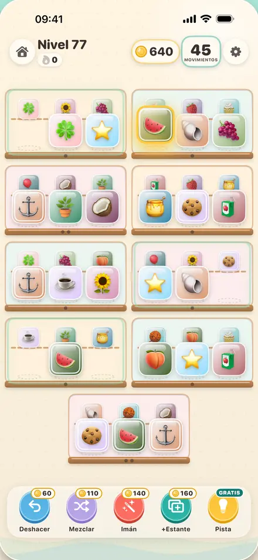
Junta tres, vacía el estante 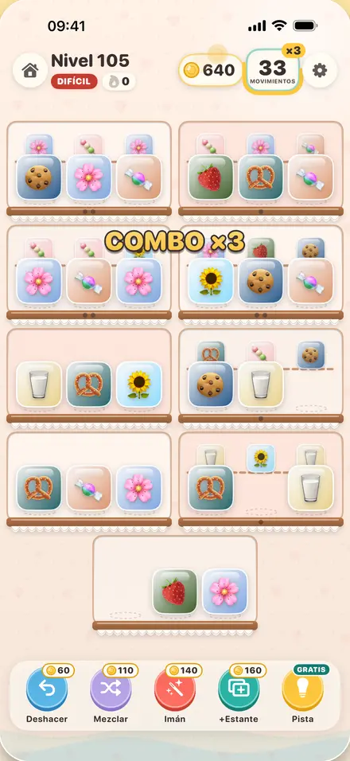
Encadena tríos y haz combo 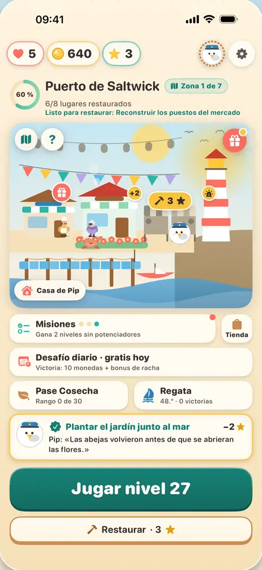
Un pueblo que te responde 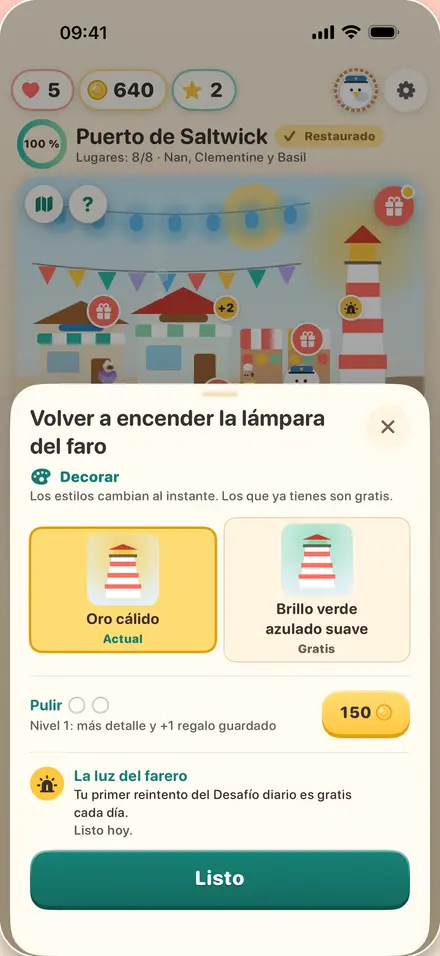
Decora cada lugar a tu gusto 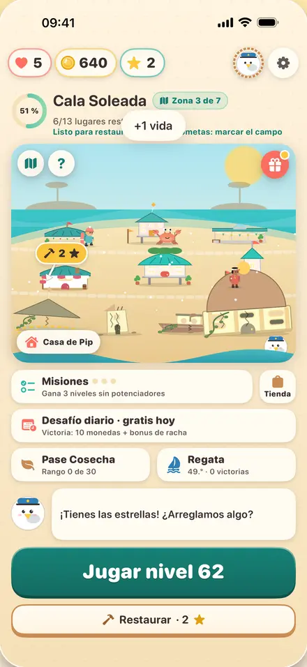
Los lugares restaurados te hacen regalos 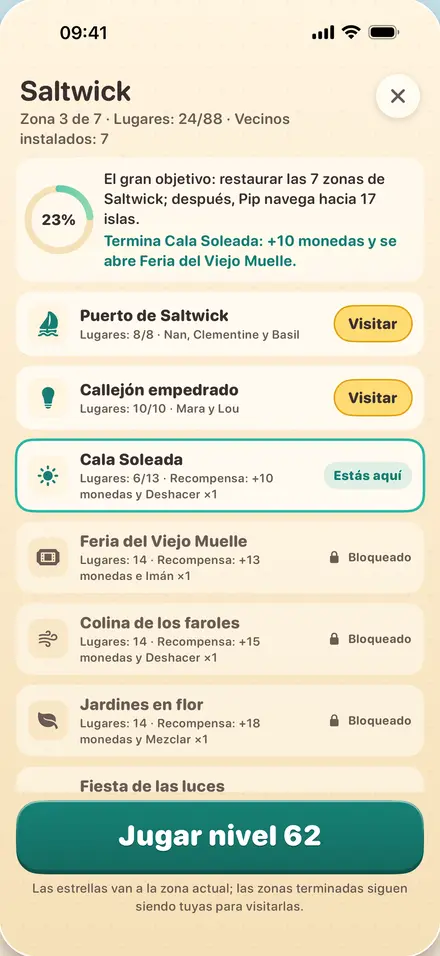
Siete zonas por recuperar 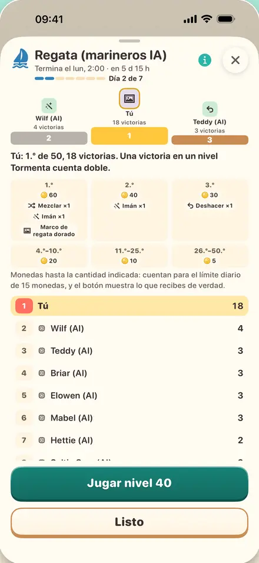
Llega a lo más alto cada semana
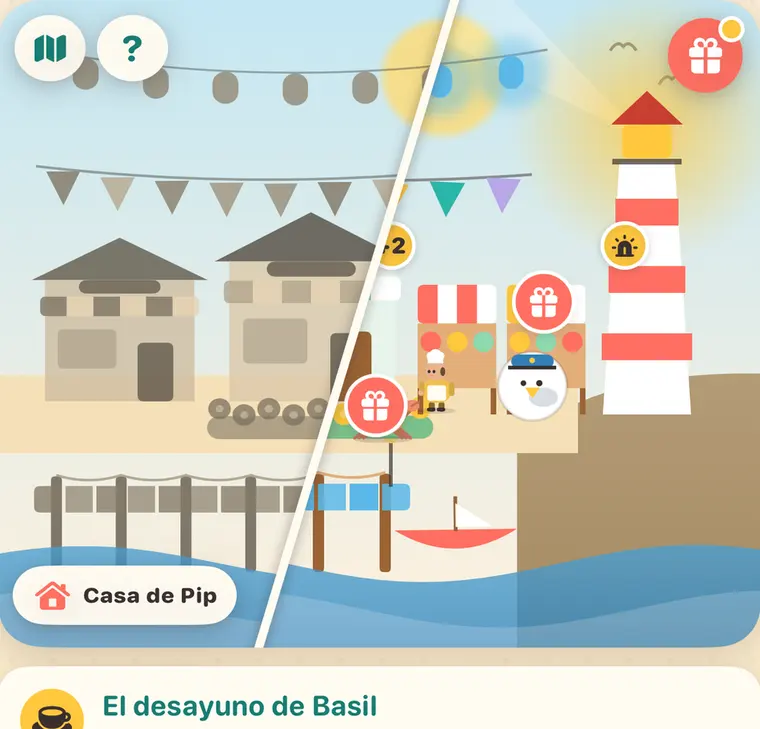
Un pueblo que te responde
Gana estrellas, reconstruye Saltwick
- Siete zonas que restaurar, del puerto de Saltwick a la Fiesta de las luces del puerto, y después las islas
- Vecinos como Nan, Basil, Clementine y Mara se mudan en cuanto su casa está arreglada: recorren el paseo marítimo y con un toque te dicen algo
- Cada restauración es una pequeña conversación: el vecino habla y Pip, la gaviota del puerto, responde
- La panadería y el faro sirven para algo: el desayuno de Basil añade 2 movimientos a tu primer nivel del día, y el farero te paga el primer reintento del Desafío diario
Conoce a los vecinos

Pip
Pip, la gaviota del puerto, te da la bienvenida a Saltwick y tiene respuesta para todos.

Nan
Nan vuelve a instalarse en cuanto su rincón del puerto está restaurado, y siempre tiene algo que decirte.

Clementine
Clementine, el cangrejo del paseo marítimo, te responde con solo un toque.
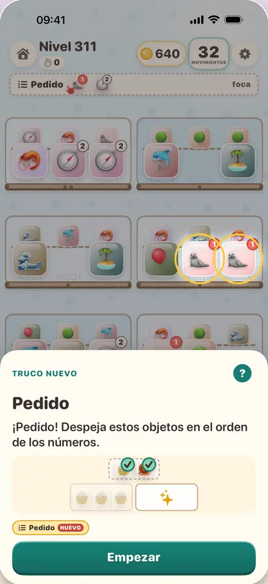
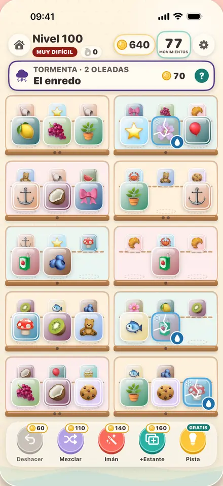
Trucos nuevos, de uno en uno
- Estantes agrietados, toboganes, carruseles, mostradores, ventiscas y pedidos se suman al hielo, los candados, los regalos, las cadenas, las cajas, la niebla, los niveles contrarreloj y la cinta
- Una ficha de inicio muestra cada truco nuevo con los objetos del propio nivel antes de tu primer movimiento, y la guía "Cómo se juega" tiene cada regla a un toque
- Los trucos se combinan, llegan variantes y los dobles turnos traen una segunda oleada de objetos al tablero
Un reto de verdad
- La dificultad sube de verdad: niveles DIFÍCILES, niveles MUY DIFÍCILES, niveles Tormenta, niveles misteriosos y respiros tranquilos
- Tableros en torres, escaleras, columnas separadas, estantes abiertos y más
- Potenciadores Deshacer, Mezclar e Imán cuando los quieras, nunca impuestos
Por qué Sortwick es distinto
Una descarga pequeña
Unos 27 MB. Se instala en un momento y deja sitio para tus fotos.
Se juega sin conexión
Sin cuenta y sin internet: en el tren, en el avión, donde quieras.
Movimientos, no cuenta atrás
Los niveles se limitan por movimientos, así que puedes pararte a pensar. Solo los escasos niveles contrarreloj van con tiempo.
Sin anuncios obligatorios en los primeros 100 niveles
Los anuncios entre niveles son poco frecuentes a propósito y nunca llegan tras una derrota. Los vídeos con recompensa son siempre decisión tuya.
Hecho para cada pantalla
Sortwick se adapta a tu pantalla: el iPhone, la pantalla interior ancha de un plegable y el iPad.
Acogedor y sin conexión
- Se juega sin conexión y sin cuenta
- Regalos diarios, misiones, un Desafío diario, una Regata semanal y una temporada de 28 días
- Colecciona cartas en el álbum, desbloquea logros y decora la casa de Pip con los muebles que consigas
- Gratis. Las compras nunca cambian la solución de un nivel, y las cajas del álbum no se compran: sus probabilidades siempre se muestran
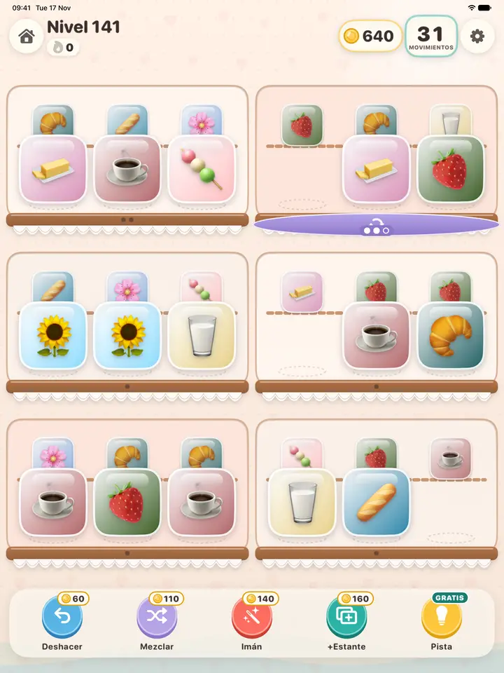
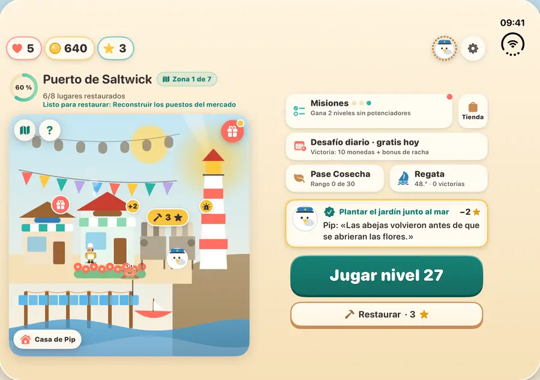
Próximamente
Android: ayúdanos a probarlo
Sortwick para Android está en prueba cerrada en Google Play y todavía no se ha publicado. Únete a la prueba, juega antes que nadie y cuéntanos qué te parece.
Unirme a la prueba de AndroidLa página de la prueba está en inglés.

Preguntas
¿Qué es un juego de ordenar productos?
Un juego de ordenar productos (también llamado goods sort, triple match o match 3 de objetos) es un puzzle en el que mueves objetos entre estantes hasta juntar tres iguales, que desaparecen. Sortwick es un juego de ordenar de este tipo, con un pueblo costero que restauras con las estrellas que ganas.
¿Sortwick es gratis?
Sí. Descargarlo y jugar es gratis. Las compras son opcionales y nunca cambian la solución de un nivel, y los vídeos con recompensa son siempre decisión tuya.
¿Sortwick funciona sin conexión?
Sí. Los niveles, el pueblo y tu progreso funcionan sin internet y sin cuenta. Solo los extras como las clasificaciones, las compras y los vídeos con recompensa necesitan conexión.
¿Hay algún juego de ordenar sin anuncios obligatorios?
En Sortwick ningún anuncio interrumpe los primeros 100 niveles, y nunca aparece uno tras una derrota. Después, los anuncios entre niveles son poco frecuentes a propósito, y una sola compra ("Quitar anuncios") los elimina del todo.
¿En qué se diferencia Sortwick de otros juegos de ordenar productos?
Los niveles se limitan por movimientos y no por una cuenta atrás (solo los escasos niveles contrarreloj van con tiempo), y todos tienen solución. Además hay un pueblo con vecinos que te responden, una descarga pequeña de unos 27 MB y juego sin conexión.
¿Cómo funcionan las vidas?
Un nivel fallado cuesta una vida; los primeros niveles se repiten gratis. Las vidas se recargan solas con el tiempo. Cuando te quedas sin ninguna, un vídeo gratis te devuelve una, la tienda vende una recarga por monedas, VIP del Puerto añade una vida extra y el Paquete de inicio incluye 1 hora de vidas ilimitadas.
¿Hay anuncios?
Ninguno en los primeros niveles. Después, los vídeos con recompensa son siempre decisión tuya (una vida extra, unos movimientos más, un potenciador gratis). Los anuncios entre niveles son poco frecuentes a propósito: ninguno en los primeros 100 niveles y nunca tras una derrota. "Quitar anuncios" (una sola compra), VIP del Puerto y cualquier compra reciente los desactivan; los vídeos opcionales se mantienen. Justo después del nivel 1 el juego pide tu consentimiento publicitario (en el EEE, el Reino Unido y Suiza) y si puede usar tu identificador de publicidad; si dices que no, los anuncios simplemente no se personalizan.
¿Qué puedo comprar?
Todo es opcional. Paquetes de 500, 1.400, 3.100 y 8.500 monedas; un Paquete de inicio único con 900 monedas, 6 potenciadores y 1 hora de vidas ilimitadas; VIP del Puerto, una suscripción mensual con 60 monedas al día, un cofre semanal, una vida extra y sin anuncios entre niveles; el premium del Pase Cosecha para la temporada de 28 días; y "Quitar anuncios". Los precios aparecen en la moneda de tu App Store junto a cada botón de compra, y Apple te pide confirmar antes de cobrar. Las monedas sirven para continuar y para comprar vidas y potenciadores; nunca cambian la solución de un nivel. Puedes fijar un límite de gasto diario en los ajustes.
¿Cómo restauro mis compras o cancelo VIP del Puerto?
Abre la tienda del juego y toca "Restaurar compras", con la misma cuenta de Apple con la que compraste. VIP del Puerto se renueva cada mes hasta que lo canceles en Ajustes de iOS > tu nombre > Suscripciones, al menos 24 horas antes de la renovación. Los reembolsos los gestiona Apple.
¿Usa Game Center?
Sí, si has iniciado sesión. Tu puntuación del Desafío diario y tus victorias de la Regata semanal van a dos clasificaciones, y 91 logros siguen tu progreso. Sin sesión no se envía nada y el juego es exactamente igual; nunca muestra una pantalla de inicio de sesión propia.
¿Qué datos recoge el juego?
Ningún dato personal: no hay cuenta y no tenemos servidores que reciban tus datos. El juego envía estadísticas de juego anónimas, sin datos personales, para que podamos equilibrarlo; puedes desactivarlas en los ajustes. El progreso se queda en tu iPhone y, si usas iCloud, en tu propia cuenta de iCloud. Los anuncios vienen de Google AdMob, que recibe los datos publicitarios habituales, personalizados solo con tu permiso. Las puntuaciones de Game Center y las compras las gestiona Apple. Los detalles están en la política de privacidad.
¿Qué dispositivos e idiomas?
iPhone y iPad con iOS 17 o posterior. En español, inglés, alemán, francés, italiano, portugués (Brasil), rumano, japonés y coreano.
¿Listo para ordenar unos estantes?
Gratis en el App Store. Pip te espera en el puerto.